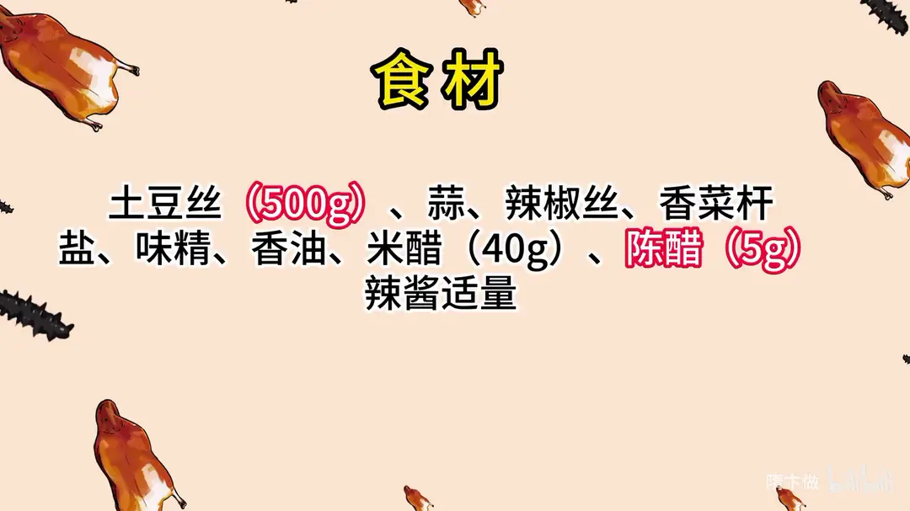
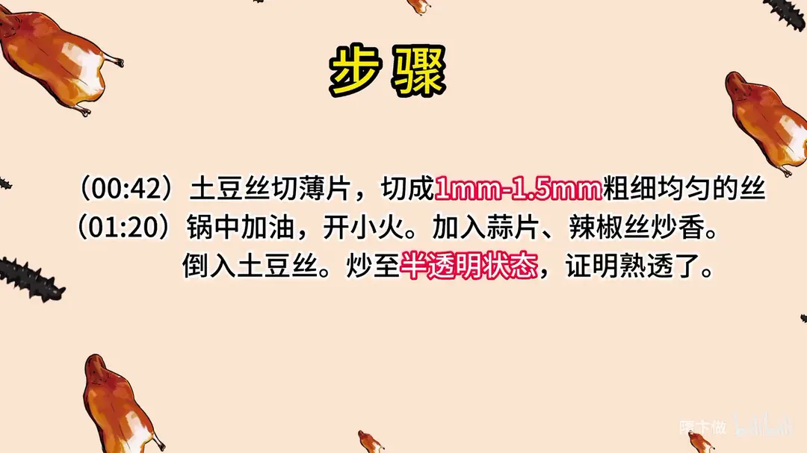
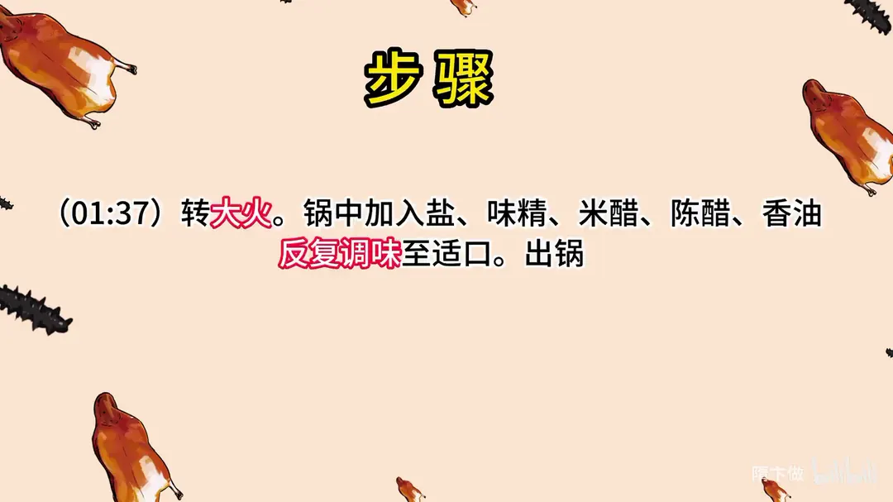

酸辣土豆丝
隋卞一做。黄金配比在米醋 40g + 陈醋 5g 的双醋组合。土豆丝切 1–1.5mm，炒到半透明。
原视频：https://www.bilibili.com/video/BV1ph4y1r7pg
食材
土豆丝、蒜、辣椒丝 等 10 样
| 类别 | 用料 | 用量 |
|---|---|---|
| 主料 | 土豆丝 | 500g |
| 主料 | 蒜 | 适量 |
| 主料 | 辣椒丝 | 适量 |
| 主料 | 香菜杆 | 适量 |
| 调味 | 盐 | 适量 |
| 调味 | 味精 | 适量 |
| 调味 | 香油 | 适量 |
| 调味 | 米醋 | 40g |
| 调味 | 陈醋 | 5g |
| 调味 | 辣酱 | 适量 |
步骤
- 切丝：土豆先切薄片，再切成 1mm–1.5mm 粗细均匀的丝。
- 炒制：锅中加油开小火，加入蒜片、辣椒丝炒香；倒入土豆丝，炒至半透明状态，证明熟透了。
- 调味：转大火，锅中加入盐、味精、米醋、陈醋、香油，反复调味至适口，出锅。
小贴士
- 双醋组合：米醋给酸度和清香，陈醋补色和厚重感，只用一种味道会单薄。
- 土豆丝切均匀比切细更重要，粗细不一就有的生有的烂。
讲解要点
难度：★★☆☆☆（难点不在炒，在切丝的均匀和酸、咸、鲜三味的平衡）
为什么这么做
- 推刀切、刀往偏一点：刀斜着往前推，切面受力小，土豆片不粘刀，也不会切出连刀——片和片连着不断。
- 先片后丝，切 1–1.5mm：片要是厚薄不匀，丝就一定有粗有细，细的烂、粗的生；火柴棍粗细是「脆」和「熟透」之间最稳的尺寸。
- 切完泡水 3–15 分钟：泡掉切面溢出的淀粉，下锅才不粘、不糊汤。想黏糊就泡 3–5 分钟，想清脆就泡 15 分钟、多洗两遍。
- 蒜和辣椒丝先小火煸香：这两样都比土豆丝容易糊，小火把香气逼进油里，再下土豆丝才有底香。
- 土豆丝下锅立刻转大火：大火让表层淀粉瞬间糊化、水分锁在里面，土豆丝才脆；火小等于把土豆丝焖熟，出水发绵。
- 炒到半透明才调味：半透明说明淀粉已经熟透，这时候下醋不会让土豆丝返生发艮。
- 米醋为主、陈醋只点一点：米醋酸得清爽、颜色浅，陈醋补一层厚重的复合酸香；陈醋多了整盘发黑。
- 香菜杆、香油最后放：这两样全靠挥发性香气出味，早放就散了。
容易翻车
- 切片厚薄不匀，一盘里有的生、有的烂。
- 泡水时间太短或没多洗两遍，下锅粘成一坨、汤发浑。
- 火不够大或炒得太久，土豆丝出水发软，没有脆口。
- 醋一次倒太多、陈醋过量，只剩尖酸，菜色还发黑。
热评补充
- 切丝之前先切片才是关键：片要是厚薄不匀，丝一定切不齐。
- 想更脆可以先飞水，土豆丝微微透明就捞出过凉水，再下锅快炒；家里火小、油少时直接炒，容易一盘里有的绵、有的脆。
原片尾卡



原片文案
AI 字幕校准稿
今天教给大家一道家常菜——酸辣土豆丝。真没想到，后台点这道菜的人还真挺多的。很家常的一个菜，咱们开始，有请主角登场。
土豆削皮。我们还是没有擦丝器，削皮这也是个基本功。脆性的原料，像土豆、青笋这类，要是片的话，都是上片；切的时候老规矩，刀往偏一点儿，推刀切，防止连刀。切成火柴棍粗细，一到一点五毫米吧。
切完的土豆丝要泡一泡，把淀粉泡出去。喜欢吃黏糊糊的，泡三到五分钟；喜欢吃清脆的，泡十五分钟，多洗两遍。
前面这活儿利索了，开火，锅里面放入油，把油烧热。放蒜，小火，再下干辣椒丝，煸出香味，然后放入土豆丝。土豆丝下去之后开始改大火，也不用着急，慢慢扒拉就行，全程大火，不用关小火。
土豆丝变软了、半透明了，这就差不多了，开始调味：盐、味精，米醋，再点一点点陈醋，香菜杆倒进去，来点香油，把味道炒匀，出锅。
我原来以为像这种家常菜，家家做的都差不多，人家做的真不一样，它那种复合的味道好像真的和平常吃的不一样。就是咸味、鲜味和酸味，这个度是很难拿的，某一个突出的话就肯定不好吃。越是家常越不好做，但是你不要担心，我会给你们很具体的克数。
大多数做土豆丝只放一种醋，我们呢又往里面加了点陈醋，就是为了增加醋的那种复合的酸味。但是一定要记住，陈醋不要放太多，因为颜色太重了，放进去之后这菜就不好看了。
原来家常菜也有这么多的味道。这期我觉得做这个菜做对了，观众朋友们应该很乐意在家尝试，这种东西身边都有，在家试试看，跟平常吃的有啥不一样。